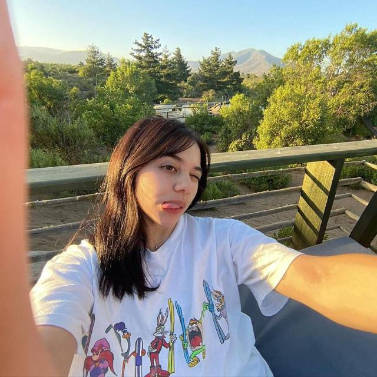

code_xml
NarrativasTecnologicas.com
Equipo 3
Narrativas Construidas
Las narrativas tecnológicas están presentes en nuestra vida cotidiana y no son solo ideas abstractas.
Basándonos en entrevistas, reflexiones grupales y noticias recientes, damos sentido a la tecnología desde la perspectiva del usuario común. Elaboramos NarrativasTecnologicas.com como forma de exponer nuestros descubrimientos.
Nuestro Equipo
Ángeles Barbara Caro Romero
Anastasia Carolina Madrid Russell
Tomás Fabian Kalau vom Hofe Vidaurre

Emilia Antonia Salamanca Ríos
Florencia Catalina Zamorano Torres